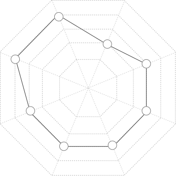

PORTFOLIO
NORIKO DOHI
GREETING
ご挨拶
クライアントの想いを形にできるWEBデザイナーになります。
はじめまして！土肥典子（ どひのりこ ）と申します。
私は2021年8月にパソコンスクールHA*NAのWEBデザイナー養成コースにて
半年間WEB制作のことを学びました。
共に働く仲間を思いやりながら、クライアントの想いを実現し人々の豊かな暮らしの手助けができるWEBデザイナーになります。
何卒宜しくお願い致します。
PLOFILE
自己紹介
- 1994年生まれ 京都生まれ福岡育ちの27歳
- 福岡の高校を卒業後、主に接客業に従事
- 【資格】Webクリエイター能力認定試験エキスパート
- 【趣味】映画鑑賞、バイオリン
- 【興味があること】UI/UXデザイン、京都検定
- 【好きな場所】出町柳、一乗寺周辺
SKILL
スキル

未経験を言い訳にせず、変化の激しいWEB業界でのインプットをし続けます。
UI/UXデザインなどにも興味があり、オンラインセミナーやXDの勉強会にも参加しています。
WORKS
制作実績

CONTACT
お問い合わせは下記よりお願い致します。
- TEL : 090-2506-8443
- MAIL : norikodohi28@gmail.com